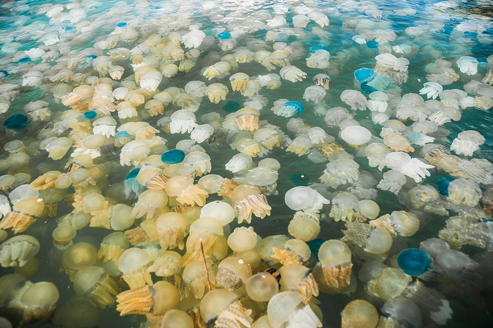

Most people if you happened to ask them have likely never considered the idea, and if you asked them, would just as likely decisively say that jellyfish do not have any natural predators; If you really ponder on the matter however it begins to seem absurd... A organism with no natural predators..? Of course it's absurd, an animal with no natural predators would ceaselessly propagate and reproduce endlessly until it had consumed all the resources available and then die off or become cannabalistic. Why does this perception exist? Why is it generally thought (or perhaps assumed) that Jellyfish have no natural predators? I believe that the answer comes from a misunderstanding; A false conception many have of the defensive and offensive organs jellyfish possess, the ones that sting you on contact, their Cnidocytes.
Without knowing how cnidocytes work (or even what they're called) one would imagine that people ascribe to them almost a magical sort of power; That cnidocytes electrically zap, or shock on contact the creatures they hunt (or your poor foot if you're at the beach). They assume that since the powerful stinging tentacles of the jellyfish are so effective certainly there cannot be any animals out there capable of harmlessly coming in contact with jelly fish let alone capable of eating them. But this simply isn't so, and, as I will explain, the mechanism of a cnidocyte (also called nematocyte) is actually rather simple. I explain what cnidocytes are here.
There are a number of animals in the ocean that are capable or braving the pain of cnidocytes or are immune to the stings that cnidocytes embedded in the tentacles of jellyfish produce. The classic example that comes to mind (you can thank disney for that) is the humble Clownfish. A clownfish is immune to the stings of the anemonies that it inhabits; clownfish secrete a mucus coat from their skin that is sufficient to protect them from the cnidocytes of anemonies. But Clownfish are not predators of any organism in Cnidaria, rather their behavior with the anemonies is more that of a symbyotic one. Learn more about the relationship between Clownfish and Sea Anemonies here
Who are the predators of the common jellyfish? Well for one thing, you are. That's right, humans eat jellyfish. There are currently 11 species of jellyfish that are considered edible. Jellyfish are commonly consumed in Southeastern Asia as well as in China and Japan and their consumption is believed to bestow certain medicinal benefits [1] [2]. I personally have never had the opportunity to taste jellyfish though I would gladly try it. I've read that Jellyfish tend to take on the flavors of the meal they're cooked with so I don't imagine that they carry with them too strong a particular taste.
Another predator of the Jellyfish is the Sea Turle; Specifically Sea Turtles from the superfamily "Chelonioidea". Among these are the Green sea turtle, Loggerhead sea turtle, and the Kemp's ridley sea Turle. Many species of Sea Turtles can live to be over 100 years old, and regular consumers of Jellyfish in the ocean. Sea Turtles are protected from the stings of Jellyfish most predominately by their shell but also by the protective coverings that line their eyes and mouth.
The Sunfish is another predator of Jellyfish in the open ocean. The sunfish is a ready consumer of jellyfish species as well as a consumer of jellyfish in all the stages of their lifecycle. Jellyfish numbers and species are thriving but so are the numbers of sunfish. The sunfish is actually a remarkable fish while we're on the subject and if I will allow myself to diverge from the current topic a bit. The sunfish is one of the heaviest known bony fishes in the world and specimens have been known to reach approximately 2200lbs. Sunfish are "generalist predators" (meaning that they consumer a varied diet) and are known to consume not only fish and jellyfish but also fish larvae, squids, and crustaceans. Probably the most recognizable and characteristic aspect of the Sunfish though is its appearance. It has two dorsal fins and an anal fin and is laterally flattened. It might not sound strange but follow this google-images-link to see what a strange appearance it has. But even these are not the end of the superlative characteristics of the sunfish, for the female sunfish can produce more eggs than any other known vertabrate up to 300 million eggs at a time (That's a lot of kids).
Returning briefly back to the subject of humans as the predators of jellyfish, there is another reason why jellyfish are killed and hunted by humans. Some species of jellyfish can be consumed and nearly all species of jellyfish are beautiful to look at (if you would indulge me in saying so), but generally jellyfish are quite unnattractive to tourists and can be quite painful or even of the case as with the box jellyfish (of which there are currenly nearly 80 species), quite fatal and dangerous. For this reason it is becoming increasingly more popular for hunters and local authorities to seek out blooms of jellyfish and erradicate them by catching them in nets and then killing them. In case the word "bloom" went over your head, that's actually how you refer to a large swarm of jellyfish, whereas a group of a few jellyfish is refered to as a smack. I am not so against the hunting and killing of jellyfish as long as it is done in an ecological and sensible fashion. In fact if one considers, since the jellyfish is a rather successful predator and has few predators of its own, the entire ocean ecosystem might indeed benefit from the careful and considerate control of marine jellyfish.
Below is a picture of a jellyfish bloom. Given the number and potential damage of such jellyfish blooms one can begin to understand why controlling the population of such a successful organism might be acceptable, prudent, wise or even necessary.
